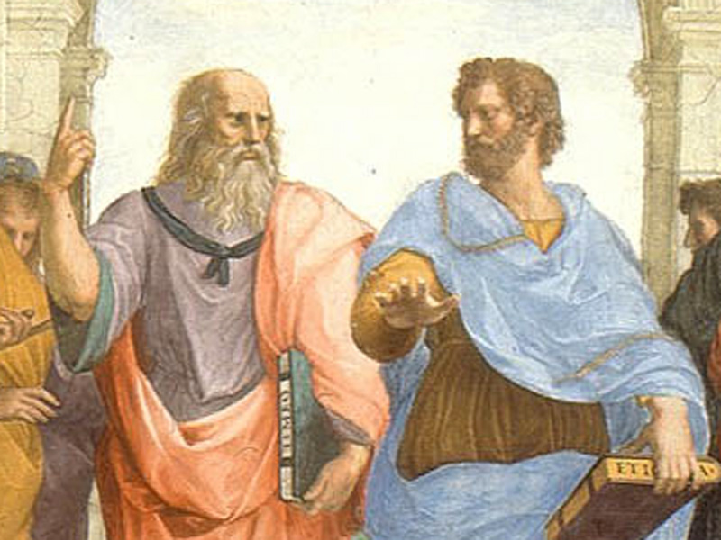
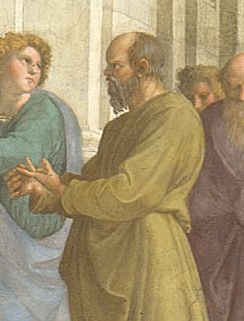

-

플라톤(Plato)과 아리스토텔레스(Aristotle)
그림의 정중앙에 있는 두 인물은 고대 그리스의 철학을 대표하는 플라톤(Plato)과 아리스토텔레스(Aristotle)로, 중세의 스콜라 철학 이후 이어져 온 아리스토텔레스 사상과 르네상스 시기에 널리 확대된 신플라톤주의의 조화를 상징한다. 왼쪽에 있는 플라톤은 자신의 저서 『티마이오스(Timaeus)』를 든 채, 오른손을 높이 들어 하늘을 가리키고 있어 관념세계를 논하는 그의 철학을 암시한다. 아리스토텔레스 역시 『니코마코스 윤리학(Nicomachean Ethics)』을 들고 있으며, 자연세계에 대한 탐구를 대변하고자 땅을 향해 손바닥을 펼치는 동작을 하고 있다.
-

소크라테스(Socrates)
플라톤 옆에는 사람들에게 무언가를 열심히 설파하고 있는 소크라테스(Socrates)가 보이며, 아리스토텔레스 아래 쪽 계단에 앉아 책을 들여다보고 있는 이는 견유학파(犬儒學派) 철학자 디오게네스(Diogenes)이다. 라파엘로는 동시대의 예술가들과 저명인사들을 현인들의 모델로 삼았는데, 플라톤의 얼굴은 레오나르도 다 빈치(Leonardo da Vinci, 1452-1519)의 모습을 바탕으로 완성했다.
-

피타고라스(Pythagoras)
그 곁에는 수학자 피타고라스(Pythagoras)가 사람들에 둘러싸인 채로 책에 몰두하고 있으며, 맞은편 전경에서 허리를 굽혀 컴퍼스를 돌리고 있는 사람은 기하학자 유클리드(Euclid)이다. 그의 뒤에 지구의와 천구(天球)를 든 사람들이 서 있는데, 등을 돌린 채 이야기를 나누고 있는 사람은 천문학자 프톨레마이오스(Ptolemy)이다. 그리고 하얀색 옷을 입고 있는 인물은 조로아스터(Zoroaster)로, 그의 얼굴은 라파엘로와 우피치 궁정에서부터 알고 지냈던 인문학자인 발다사레 카스틸리오네(Baldassare Castiglione, 1478-1529)의 초상과 거의 흡사하다. 그들 옆으로 동시대 화가인 소도마(Il Sodoma, 1477–1549)가 보이며, 정면을 응시하고 있는 검은 모자의 청년은 바로 라파엘로 본인이다.